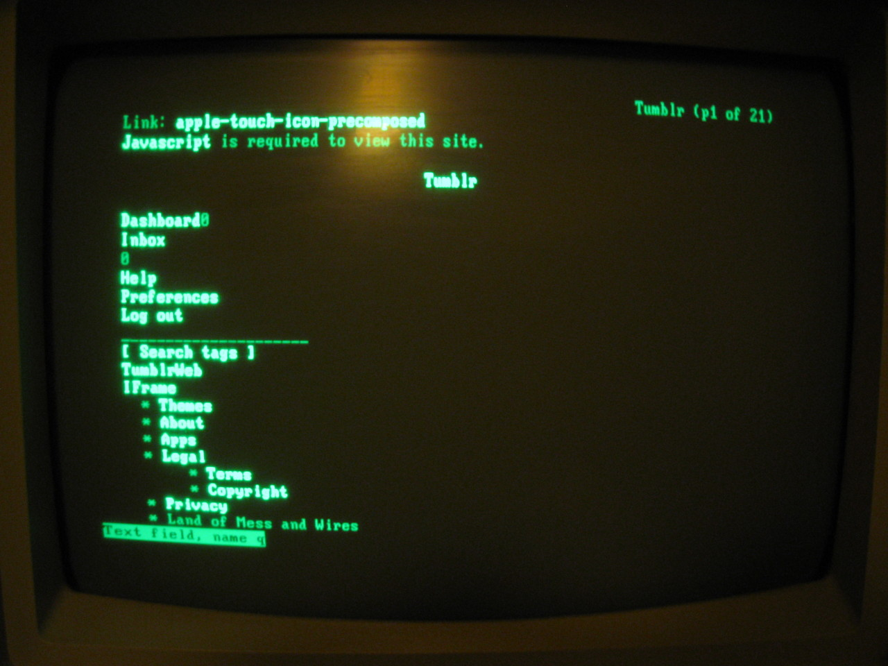
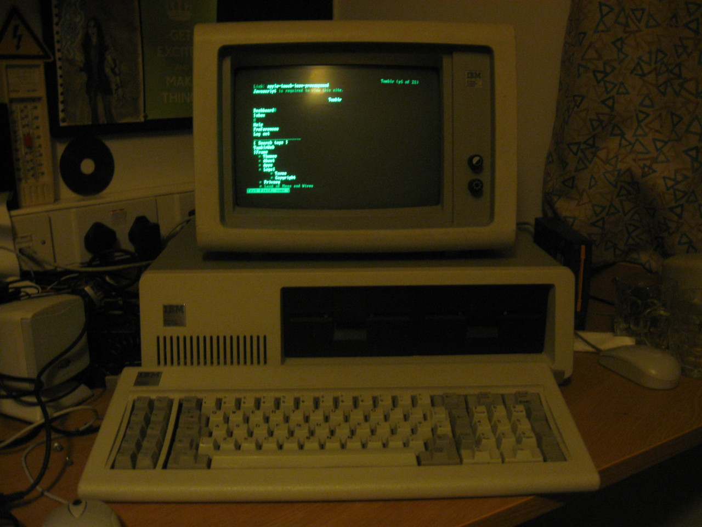

Hah, still better than tumblr mobile!
So I got my IBM 5150 up and running, for the nerds out there here’s the specs…
- 4.77MHz AMD 8088 CPU and 8087 FPU
- 512K RAM
- MDA “graphics”
- x2 360KB 5.25" Floppy Drives
- 4GB Compact Flash card (thanks to lo-tech.co.uk)
- Xircom PE3-10BT Network Adaptor, this connects to the parallel port.
I used the mTCP Telnet program to connect to a unix box and browse tumblr with Links, unfortunately the DOS browsers won’t work properly.